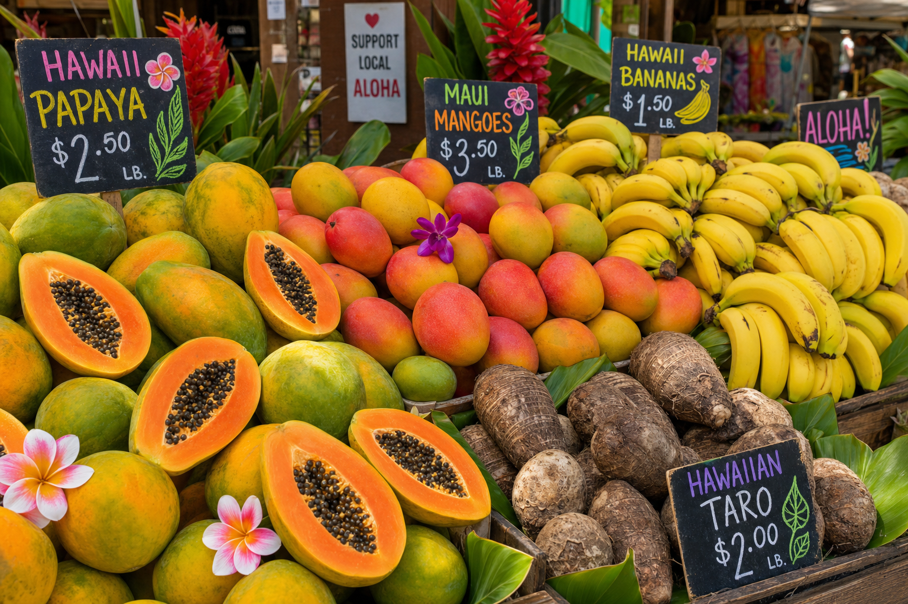
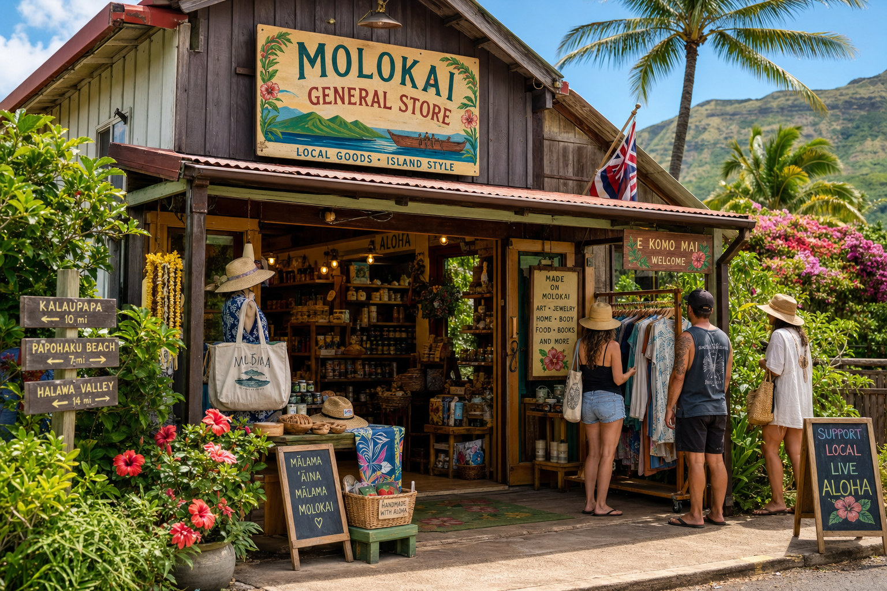
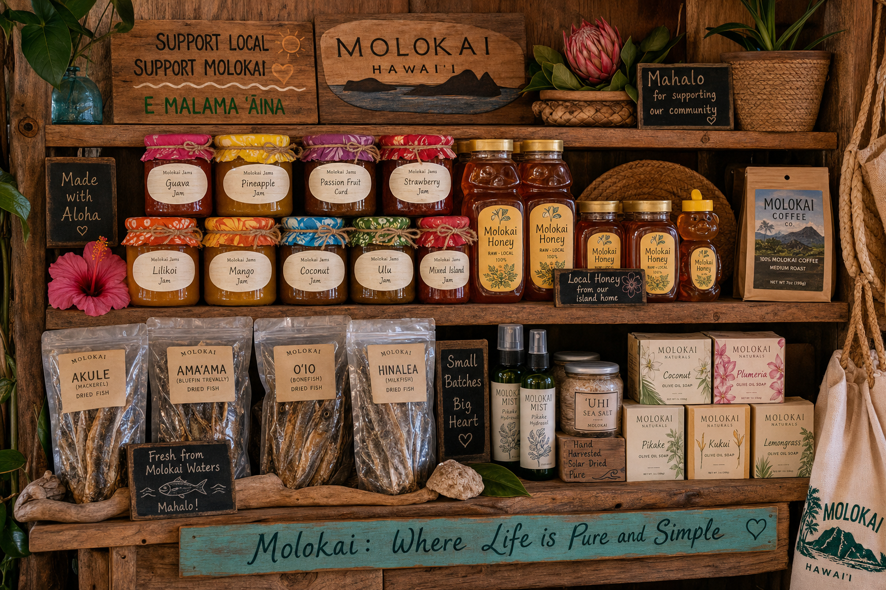
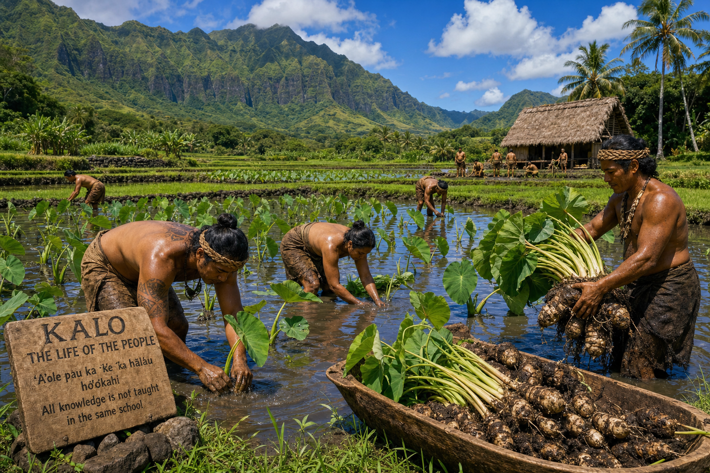
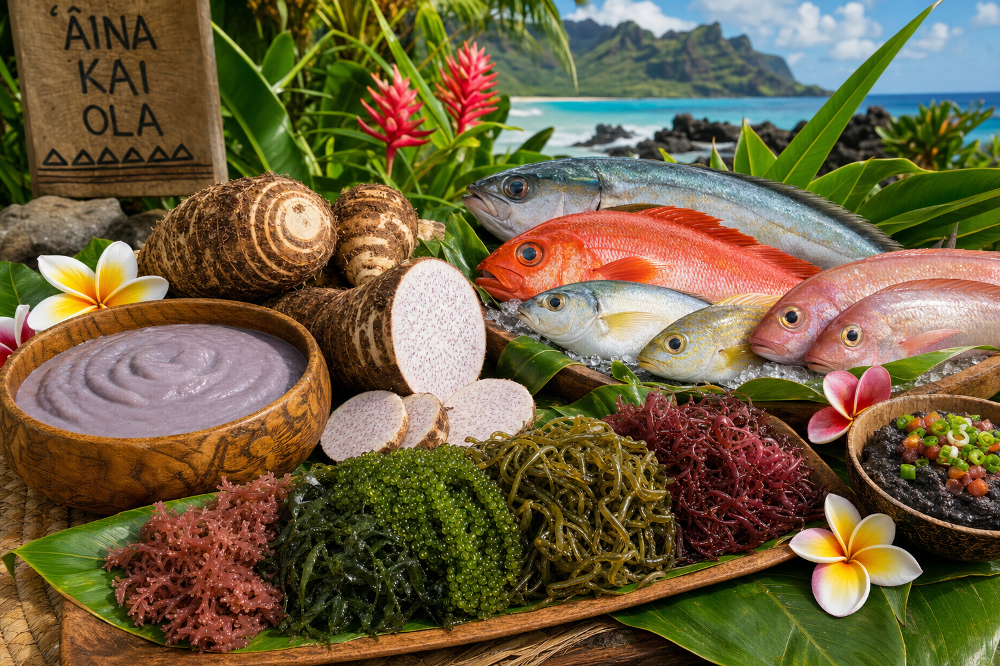
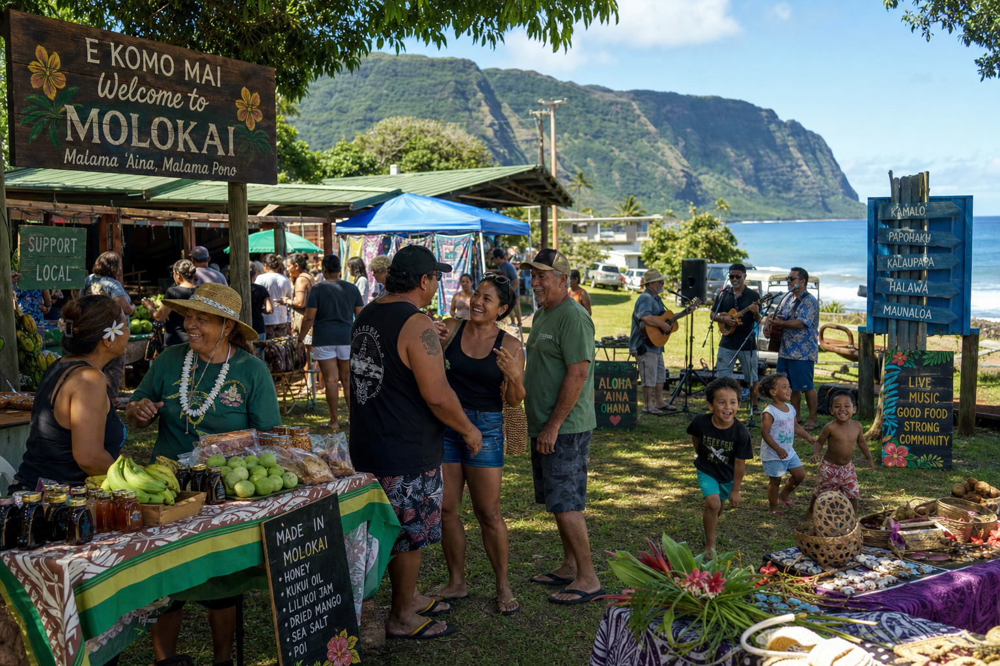

Stories, guides, and recipes from the heart of Molokai.

From sweet potatoes to taro, breadfruit to banana — discover what grows on our island and why it's so special.
Read More →
The economic and cultural case for keeping your shopping dollars local on Molokai.
Read More →
An honest comparison of the real costs, benefits, and community impact of where you shop.
Read More →
From ancient Hawaiian fishponds to today's organic farms — how the land shaped our island culture.
Read More →
Taro, limu, noni, and more — the powerful health benefits of traditional Hawaiian foods.
Read More →
Where to find the best farmers markets, roadside stands, and community sales across the island.
Read More →